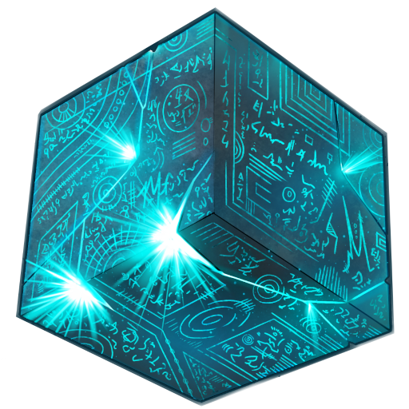

 ManaCube Events Team (2019 - 2021)
When I was 15 I started volunteering for the events team of ManaCube, a Minecraft server I spent a lot of time
on. At the time, the server averaged 2,000 concurrent players and events hosted between 50 - 200 participants.
Two teammates and I were appointed as Event Coordinators and, since the team had just been restructured, we were
given fairly free rein to help wherever we felt comfortable. I spent most of my free time working to improve
the in-game experience and, after 8 months, I was promoted to the brand-new position of Event Manager.
I spent just over 2 years as the server's Event Manager. During my time in the role, I:
- learnt to program Minecraft plugins in Java using the PaperMC API;
- lead event development projects;
- designed and held training sessions for new team members;
- fixed issues that arose during live events, both technical bugs and players' problems;
- and ensured that our two weekly events ran smoothly every time.
While the Events Manager role was only supposed to be about managing the team and events, I used my position as
an excuse to learn to write code. My first ever program I wrote for the server was a complete mess of static
functions and copy and pasted StackOverflow code, but practice makes perfect and by the time I left, I was
writing perfect-ly tolerable code!